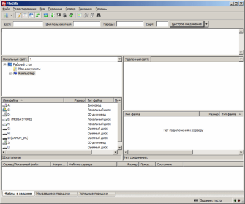
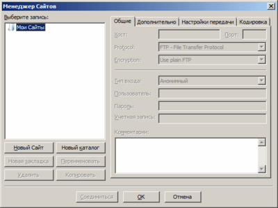

Languages:
English •
Русский •
Português do Brasil •
(Add your language)
FileZilla это FTP-клиент с открытым исходным кодом и FTP-сервер разработанный под операционные системы семейства Windows автором Tim Kosse (Германия) и другими. Он поставляется в двух версиях, с Javascript и без-Javascript.
Filezilla может использоваться для управления вашим сайтом на WordPress загружая и скачивая файлы и картинки на сайт и с сайта. Эта статья проведет вас через процесс установки и использования Filezilla для управления вашим блогом, созданным на WordPress и находящимся на сервере.
 Рис. 1: Главное окно FileZilla
Чтобы узнать больше о FileZilla, смотри список возможностей на сайте проекта.
Почему я должен хотеть скачать FileZilla?
Он быстр, стабилен, прост в использовании, и бесплатен. FTP это стандартный способ загрузки и скачивания файлов межу вашей системой и вашим веб сервером, а FileZilla это хороший помошник для ежедневных FTP нужд.
Установка Параметров
Следующие детали вам нужно будет посмотреть на аккаунте FTP вашего сервера:
- Адрес ftp вашего сайта (обычно ftp://example.com если ваш URL http://example.com)
- Ваше ftp имя пользователя
- Ваш ftp пароль
Если у вас нет FTP аккаунта на вашем сервере, используйте cPanel или инструмент для администрации над сайтом и создайте один FTP аккаунт -- там будет вся необходимая информация. Если вы сомневаетесь, спросите вашего хостинг-провайдера об указаниях или попросите о помощи, чтобы посмотреть где ваш FTP аккаунт для доступа в веб-пространство сервера.
Сверху слева, щёлкните Файл затем Менеджер Сайтов
 Рис. 2: Окно Менеджер Сайтов
На следующем скриншоте нужно заполнить данные, и тогда мы сможем приступить к делу.
- Щёлкните Новый Сайт затем присвойте имя новому соединению, какое хотите (например: Сервер моего блога).
- Введите ftp адрес вашего вебсайта. Обычно, если адрес вашего вебсайта http://www.example.com, то ftp адрес будет ftp://ftp.example.com или ftp://example.com.
Не всписывайте в конце адреса / если специально об этом не попросят в CPanel или на хостинге.
- Оставьте этот параметр как FTP - File Transfer Protocol, и номер Порта должен оставаться со стандартным значением(пусто или 21). Меняйте эти параметры только если в вшем FTP аккаунте указано, что вы должны это сделать.
- Убедитесь, что Тип Входа установлен на Нормальный. (В более старых версиях вместо выпадающего списка располагается чекбокс)
- Вставьте полное имя пользователя, которое вы получили. Оно может выглядеть как имя пользователя, или как email адрес (но при этом им не являться). Например, это будет выглядеть как user или user@example.com
- Теперь введите ваш пароль. Запомните, что пароль может быть чувствителен к регистру.
Нажмите ОК. ("Сохранить и Выйти" в предыдущих версиях)
Соединение
Вверху слева главного окна (Рис. 1), нажмите Менеджер Сайтов, и появится окно, которое вы только что видели (окно FTP деталей, Рис. 3).
Но на этот раз, нажмите кнопку Соединиться внизу окна.
Если все сделано верно, то вверху окна с Рис. 1, вы увидите серию сообщений, и в большом окне, вы увидите, что появился список файлов.
Устранение неполадок
Если у вас появились проблемы, то пришло время устранить их!
Посмотрите в верхнюю часть окна (Рис. 1) и проверьте сообщения.
- Если бы не было попытки подключения, значит ftp адрес указан неверно. Все это может быть из-за одного неправильно указанного символа. Щёлкните по красному X, прервите соединение и нажмите на Менеджер Сайтов, чтобы проверить введенные данные.
- Еси говорится что бользователь не существует, проверьте в окне Менеджера Сайтов параметры и убедитесь, что они такие же как и в деталях вашего FTP аккаунта, которые предоставил хостинг-провайдер, или используйте интерфейс администрирования вебсервера предоставленного вам вашим хостинг-провайдером чтобы повторно проверить существование FTP аккаунта. Так же о некоторых проблемах вы можете спрашивать вашего хостинг-провайдера.
- Если говорится, что Неправильный логин, значит у вас неверный пароль -- снова, внимательно проверьте его, и посмотрите на ваш случай (заглавные и прописные буквы).
- Если же говорится, что Не могу получить список каталогов возможно вам нужно изменить Дополнительные настройки для этого соединения в Менеджере Сайтов, например Режим передачи установлен как Пассивный.
>> Далее: Следующая страница : Загрузка WordPress на удаленный хост
{kind=link}
{kind=link}
{kind=link}